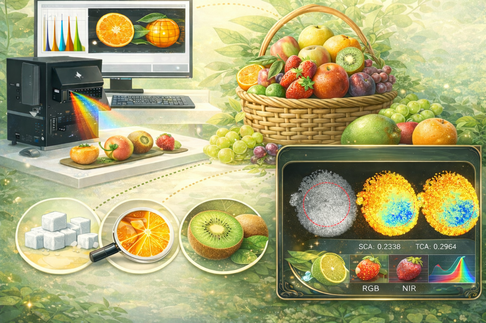

刘又夫
数学与信息学院 信息工程系 副教授 硕士生导师
农业农村部华南热带智慧农业技术重点实验室
自我介绍
大家好，我是刘又夫，广东广州人，1995年2月出生， 现为华南农业大学数学与信息学院首聘副教授、硕士生导师， 农业电气化与自动化博士（导师：肖德琴教授）。 我的学术之路走得很专一—— 博士聚焦鸭蛋无损检测， 博士后延续水禽养殖与鸭蛋方向， 博后期间赴日本开展联合培养，导师是日本农机之父近藤直（Naoshi Kondo）教授。 入职后继续深耕蛋内性别检测这一真正的"硬骨头"，一条路走到底。
以第一或通讯作者在 Computers and Electronics in Agriculture、 Biosystems Engineering、 Poultry Science 等领域知名期刊发表 SCI 论文 10 余篇， 同时也是上述期刊的审稿专家。 运气不错，主持了国家自然科学基金青年项目 及博士后科学基金面上项目等多项科研课题。
📮 LYF@scau.edu.cn
📍 华南农业大学 数学与信息学院 417
🏫 农业农村部华南热带智慧农业技术重点实验室
当前研究项目

基于翅标芯片的种公鹅交配监测与社会网络分析
种公鹅的选育，不能只看"长得壮不壮"，还要看"表现到底怎么样"。当前产业中，公鹅选育主要依赖表型观察，但对其真实交配情况缺乏有效、智能的监测手段。与此同时，鹅的社会关系会不会影响交配表现和后代繁衍，目前也还不明确。项目将利用翅标芯片和数据分析方法，给种公鹅建立交配行为档案和"社交网络图谱"，为种鹅智能选育提供更加科学的依据。

蛋受精、蛋内性别、蛋品质等无损检测系列试验
一枚种蛋里面其实藏着很多产业最关心的信息：它有没有受精、里面是雌是雄、蛋黄怎么样、新不新鲜、有没有裂纹等。研究希望在"不打开蛋"的前提下，把这些关键信息尽可能提前、准确地读出来。蛋品质影响孵化和出壳率；尽早识别无精蛋，可及时剔除并回收其商业价值；而蛋内性别检测更是"高难题"，如果能在出壳前完成判断，就能免去出壳后人工翻肛鉴别性别的负担。

水果等其他农业产品品质检测
在不切开、不破坏农产品的前提下，尽可能准确地"看懂"它的品质。围绕水果及其他农产品的甜度、硬度、新鲜度、内部缺陷等关键指标，结合光谱成像、核磁共振等技术手段，以及机器视觉和智能算法，探索更高效的无损检测方法，为农产品分级、储运和加工提供更可靠的技术支撑。
依托平台

华南热带智慧农业技术重点实验室
华南热带智慧农业技术重点实验室（智慧小院）是我科研工作的核心依托平台之一，位于华南农业大学启林北实验基地。平台集智能植物工厂、智能家禽工厂、感知设备、算法模型、智能装备与管控平台于一体，是"设备齐全、场景完整、产学研紧密结合"的智慧农业综合平台。

国家水禽岗位科学家
水禽智能化岗位是国家农业农村部现代农业产业技术体系中的重要岗位，也是一个离行业前沿很近、离生产一线更近的平台。在这里，既能和水禽领域的知名专家面对面交流，也更容易拿到一线需求、试验资源和合作机会。对科研来说，选题不是"闭门想出来的"，而是从产业现场"长出来的"。
给未来同学的一封信
一起攻破水禽养殖的科学问题